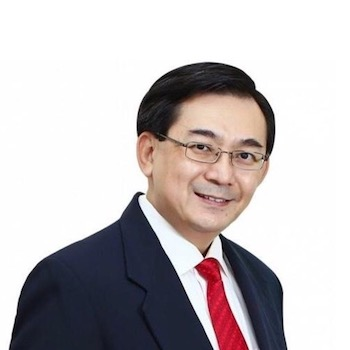
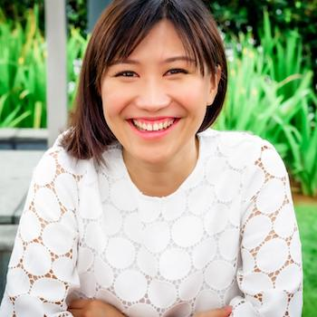
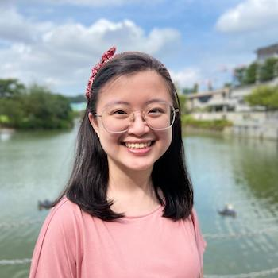

Speakers

Mr Oliver Tian
Honorary Advisor of Asia Pacific Assistive Robotics Association
Director and Founder of Oliver Tian Associates
CEO of HutCabb Services
Vice-Chairman of International Alliance of Robotic Associations (IARA)
Vice-President of Global Robot Cluster
Advisory Board Member of Responsible Technology Institute, University of Oxford
Immediate Past President of Singapore Industrial Automation Association (SIAA)
Former Member of Alumni Advisory Board to President of NUS
Mr Oliver Tian was educated at the Christian Brother Schools in Singapore,
including Catholic Junior College. During this time, he was a nominee for the Junior
Patrician of the Year award in 1978. The late Brother Joseph McNally, who was the Principal
then, was highly regarded by Mr Tian as a mentor and respected teacher whom he was fortunate to
know as a friend.
Mr Tian started his career as a consultant with Accenture (then Arthur Andersen Associates) and
continued his two-decade journey with multinational corporations which included US-based companies
such as HP, Veritas and PTC. In 2008, he decided to work with the local community and spent the next
decade on various start-ups as well as small and medium enterprises (SME). Among his innovations are
tele-rehabilitation for stroke patients, elderly fall risk assessment, dementia care and
inter-generational robotic programs.
For his outstanding contributions to industry work, Mr Tian was a recipient of the 2004 Gopal Haridas
Award from the Singapore Children Society and the 2014 Asia Pacific Entrepreneurship Award for the
category of Most Promising Entrepreneur. In 2019, he was given the Outstanding Contributions Awards
from Daegu City, Korea.
A renowned international speaker, Mr Tian has been invited to speak at global conventions
in France, Germany, UK, Spain, China, Korea, Taiwan and South East Asia countries. Today, he is an
advisory consultant to both local and international startups and holds a number of concurrent pro
bono appointments with several non-profit organisations.
Mr Malcolm Ong
Founder and CEO of The Fish Farmer
Mr Malcolm Ong graduated from the National University of Singapore (NUS) with an engineering degree
in 1988. He started his career as an IT engineer. Subsequently, he won a scholarship to study in
England from 1994 to 1995 and graduated with an MBA from the University of Bradford. Later, he
joined a start-up company in 1996 and grew the company to $20 million in revenue. In 2007, he sold
all his shares in the IT company to a big French group.
After being in IT for nearly 20 years, Mr Ong started looking for a career switch. This led him to
pursue his passion for fishing, culminating in the establishment of what would grow to be one of the
biggest aquaculture companies in Asia, The Fish Farmer. This was also prompted by his concerns over
reports that our oceans are being depleted at an alarming rate.
With the growing world population and more people becoming affluent, there is a higher demand for
fish as it is deemed a healthy food option. Singapore imports a staggering 96 percent of seafood
from overseas. The Fish Farmer has been feeding Singapore since 2007 when it was first founded. Now
the company has a total of four farms located off the waters of Lim Chu Kang and Changi that are
capable of producing 1,000 tonnes of fish annually which includes grey mullet, milk fish, red snapper,
Barramundi and sea perch.
The Fish Farmer’s unique business proposition is to cultivate and market fishes in a natural,
responsible and sustainable way. The fishes at The Fish Farmer are nurtured without any growth
enhancements. Leaning on his IT and engineering expertise, Mr Ong transformed his business to an
elevated and more sustainable level by integrating traditional fish farming with advanced technology
and modernisation. More than 70 percent of the farms are made of recycled materials, and the water
monitoring system of each farm is solar-powered and designed for a low energy footprint.

Ms Jennifer Widjaja
Co-founder of Just Dabao
Ms Jennifer Widjaja is a self-driven and focused individual who is passionate about sustainable
livelihood in Asia. Getting a simple yet life-changing product into the hands of millions of people
and making small changes in their lives is her reason to wake up everyday.
Knowing that food waste has become a national issue, Ms Widjaja researched the F&B scene during
the Circuit Breaker in 2020 and investigated the food waste problem in Singapore. She interviewed
consumers, ran focus groups and created surveys to develop a deeper understanding of the food waste
problem.
When her friend, an F&B merchant, had to shut down her business at the height of the pandemic,
she ended up throwing away stocks of food.That incident spurred Ms Widjaja to come up with a
sustainable and fun solution for this problem.
In August 2020, she co-founded Just Dabao - a business that connects buyers with over 400 eateries,
helping them sell food which would otherwise go to waste. Food at Just Dabao is sold at an average of
50 percent off to help merchants maximise sales and reduce losses. Acknowledging people’s familiarity
and love for food, the company aims to remodel sustainability as people’s first choice without
compromising on their lifestyle.
Prior to starting Just Dabao, Ms Widjaja was a financial analyst in Bloomberg.
Her previous work experience include working at Procter and Gamble as an assistant manager of HR
and at HRnet as an associate consultant. She was also a business development intern in Little Sparrows
Technologies, a digital marketing intern at Blibli and a marketing intern at UBS Wealth Management.

Ms Yeo Pei Shan
Co-Founder and Director of Operations of Ugly Food
Founder of Food Warrior
Founding team, UglyDuck Cafe
Ms Yeo is a social entrepreneur who believes strongly in developing self-awareness and looking
within ourselves to reach our potential. In 2017, she co-founded UglyFood, a social enterprise that
aims to eliminate food waste by raising awareness to reduce the stigma around bruised produce.
To date, 400 tonnes of produce have been rescued from going to waste.
Ms Yeo left UglyFood in 2021 after serving as Director of Operations for over three years.
During that time, the company expanded its supply base and began taking on excess produce from farms,
which would normally go to waste. Thereafter, she continued working on multiple projects that promote
food sustainability.
She started Food Warrior in 2021, which aims to empower the youth to explore opportunities in the
food sustainability space. She is also part of the team behind UglyDuck Cafe - a community cafe with
focus on food sustainability and community engagement.
Ms Yeo has worked with SJI for the 2020 Year 3 IP Signum Fidei Program where students proposed
ideas about implementing sustainability practices in the school.